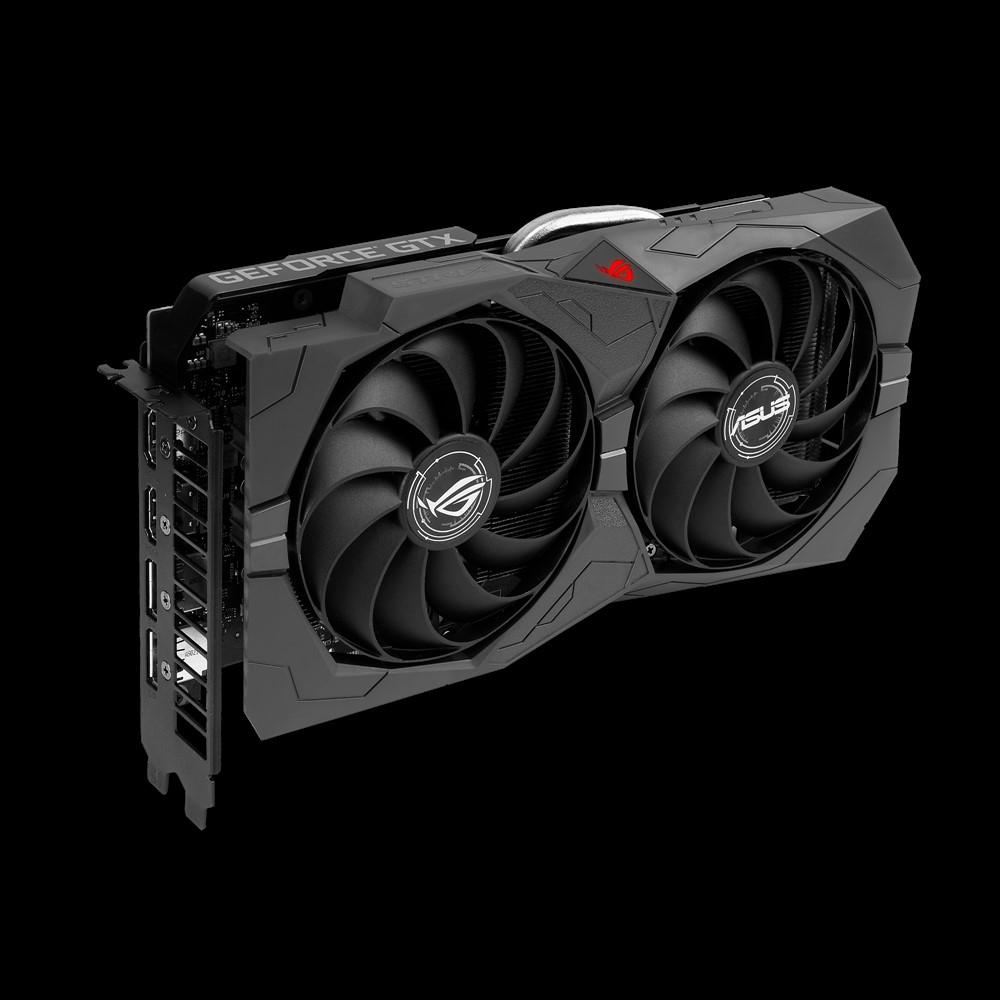
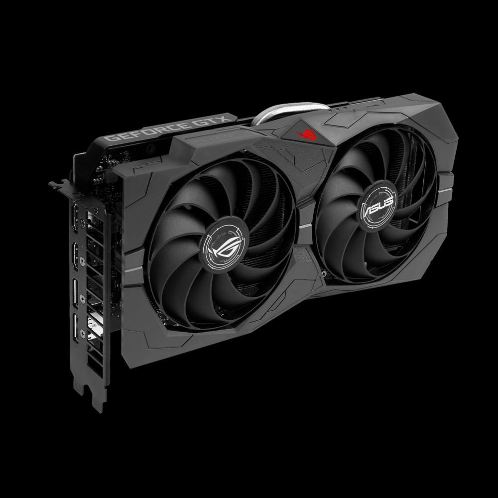

Vga grafikos plokštės aprašymas - Įranga 2020
2020.10.29 12:41
Kompiuterinė teismo ekspertizė Kompiuteriniai žaidimai Duomenų atkūrimas Duomenų bazė Elektroninis ir nuotolinis mokymasis
Įranga
VGA grafikos adapterio aprašymas
Spalio Mėn 2020 Kas yra VGA? VESA DDC DDC1 DDC2 Savarankiškas VGA laido prailginimasVGA grafikos adapteris skirtas monitoriams prijungti prie kompiuterio. Beje, šiuo metu toks ryšys laikomas nereikšmingu, nes technologijos nėra stovinčios ir šis jungtis buvo pakeista pažangesnėmis galimybėmis prijungti prie monitorių.
Ryšium su skystųjų kristalų technologijomis pagamintų monitorių rinkose, nepakanka VGA grafikos adapterio galios. Todėl į grafines korteles buvo įdėta daugiau pažangių tipų jungčių, turinčių didelį potencialą.
Kas yra VGA?
Taigi, VGA grafikos adapteris yra jungtis, skirta analoginiam prijungimui prie kompiuterio. Ši jungtis atsirado 1987 m. IBM, kuri sukūrė tokias jungtis naujos kartos kompiuteriams.
Pagrindinėje plokštėje VGA grafikos adapteris buvo prijungtas prie grafikos plokštės. Didžiausia ekrano raiška, kuri tuo metu galėjo būti palaikoma, buvo 640 x 480 pikselių.
Daugelis šiuolaikinių grafinių vaizdo plokščių modelių palaiko ryšį su VGA grafikos adapterio jungtimi, bet tik monitoriuose, kurių skiriamoji geba neviršija 1280 x 1024 pikselių, o ekrano atnaujinimo dažnis pasiekia 75 kadrus. Jei prie VGA prijungsite didesnės skiriamosios gebos vaizduoklį, tuomet bus didelis kokybės sumažėjimas ir vaizdas neteks aiškumo.
VESA DDC
Pirmoji monitoriaus standartinės grafikos plokštės VGA jungties versija yra DDC. Išleistas 1994 metais, šis adapteris užtikrino stabilų jungties ir monitoriaus veikimą, galėdamas aptikti daugelį fizinių srautų tipų. Darbas buvo palaikomas EDID 1.0 formatu.
Kita šios jungties versija, kuri atsirado 1996 m., Apėmė jau atnaujintą EDID formatą, palaikantį unikalų DDC2B + protokolą. Po metų ši sąsaja buvo patobulinta, o tai leido įsigyti patobulintą protokolą - DDC2Bi, be to, buvo teikiama parama VESA kištuko ir ekrano prijungimui.
Nuo 1999 m. Buvo nuspręsta DDC pakeisti E-DDC, tačiau EDID vis dar galima rasti šiandien, nes jis naudojamas kaip pagalbinis standartas, naudojant jį galite nustatyti, kuris formatas buvo naudojamas kompresuojant dvejetainį failą. Šiame faile pateikiama informacija apie grafikos monitoriaus savybes ir režimus, kuriuos monitoriaus gamintojas įrašo atminties mikroschemoje.
DDC1
DDC1 jungtis yra VGA grafikos adapteris, leidžiantis monitoriui perduoti visą informaciją į kompiuterį naudojant vienpusį ryšį. Jis veikia tokiu būdu - vaizdo plokštė atpažįsta duomenis apie informaciją kabeliu, tada, naudojant vertikalaus sinchronizavimo impulsus, sinchroniškai nuskaitoma.
DDC2
Ši jungtis VGA grafikos plokštė jau turėjo galimybę dvipusį duomenų perdavimą. Tai atrodo taip - monitorius perduoda duomenis ir kompiuteris automatiškai prisitaiko prie gautų duomenų, kad pritaikytų monitoriaus veikimą.
Savarankiškas VGA laido prailginimas
Dėl fizinių gebėjimų yra kartų, kai reikalingas VGA grafikos kabelio plėtinys. Paprasčiausias variantas būtų nusipirkti pageidaujamo ilgio kabelį, bet kyla klausimas apie jo kainą, kuri yra pernelyg didelė.
Kita savarankiškai sukurtos versijos priežastis gali būti kabelio perkėlimas į kitą kambarį. Jei sienos skylę sukursite iki penkių centimetrų dydžio - tai ne alternatyva, tuomet improvizuotas pailginimas yra būtinas.
Geriausias variantas būtų naudoti VGA RJ-45 grafikos adapterį be jokio raciono, nes jų nebuvimas supaprastins užduotį, paprasčiausiai išspaudžiant vytos poros galus ekranuotu pynimu.
Geriausi VGA kabelio išplėtimo variantai yra adapteris iš šio prievado į tulpių kištukus.
Dabar VGA jungtys pakeistos pažangesnėmis galimybėmis perkelti vaizdus iš vaizdo plokštės į monitorių - tai DVI jungtis. Tačiau nepaisant to, daugelis vaizdo plokščių vis dar palaiko šią ryšio parinktį.
Redaktoriaus Pasirinkimas
Įranga
ZXHN H118N maršrutizatorius: charakteristikos, konfigūracija
Programavimas
C visų C įtraukimo paaiškinimų sąrašas
Operacines sistemas
Kokius „Windows 7“ naujinimus negalima įdiegti? Patarimai
Populiarios Temos
„Lenovo B570e“ nešiojamas kompiuteris (Lenovo B570e): aprašymas, specifikacijos, apžvalgos
„Numatomo vedlio“ įvertinimo programa. „Įvertinimo vedlys“: instrukcijos, apžvalgos
Rekomenduojama
FPS žaidime - kas tai yra? Kaip jį kelti?
„Hitman“ sutartys: pasivaikščiojimas
Populiarios Temos
Programavimas Duomenų atkūrimas Programinė įranga Įranga Intranetas Tinklą Nešiojamieji kompiuteriai Failų tipai Kompiuteriniai žaidimaiPopuliarios Kategorijos
Kaip sfotkat ekraną nešiojamuoju kompiuteriu įvairiais būdais?
Kaip pašalinti „Facebook“ iš savo telefono: praktiniai patarimai ir gudrybės
© Copyright. lit.kagutech.com: Spalio Mėn 2020
- Kas yra integruota grafikos plokštė?
- Skirtumas tarp atskiros ir integruotos grafikos kortelės ...
- grafikos plokštės
- Vaizdo Plokštės GeForce, Radeon. Vaizdo Plokste Internetu ...
- NAUJOS GRAFIKOS PLOKŠTĖS ĮDIEGIMAS! - ŽAIDIMAI(2020)
- Grafikos plokštę "HD 7970: techninė harakterisitki ir ...
- Vga grafikos plokštės aprašymas - Įranga - 2020
- 10 geriausių kompiuterio grafikos plokštės 2018 m - Žmonių ...
- Kaip sužinoti, kokią grafikos plokštę turiu? („Windows 10 ...
- Grafikos kortelių reitingas - palyginimų sąrašas 2020
- Kas yra integruota grafikos plokštė?
Papildomi būdai sužinoti, kuri grafikos plokštė naudoja „Windows“ Be jau aprašytų metodų, „Windows 10“, „8“ ir „Windows 7“ yra papildomi sistemos įrankiai, leidžiantys gauti informaciją apie vaizdo plokštės modelį ir gamintoją, kuris kai kuriais atvejais gali būti naudingas (pvz., Jei administratoriui neleidžiama ...
- Skirtumas tarp atskiros ir integruotos grafikos kortelės ...
Pavyzdžiui, integruota "Intel" grafikos plokštė sunaudoja ne daugiau kaip 15 vatų. Todėl temperatūros režimas yra švelnesnis - galite sumažinti triukšmingų ventiliatorių skaičių sistemos vienete. Trečia, linijų skaičius ir ilgis mažėjaSistemos autobusas naudojamas bendrauti su kortele, todėl galite gauti aiškesnį vaizdą ...
- grafikos plokštės
Žinant, kokią grafinę plokštę turite kompiuteryje su „Windows 10“, labai svarbu, nes per šią informaciją galite atsisiųsti, įdiegti ir atnaujinti reikalingus tvarkykles. Grafinė kortelė, vaizdo plokštė arba vaizdo plokštė yra pagrindinė ir esminė kompiuterio sudedamoji dalis, nes ji yra atsakinga už visų kompiuterio ir visų jį valdančių programų grafinių (ty ...
- Vaizdo Plokštės GeForce, Radeon. Vaizdo Plokste Internetu ...
Norint pakeisti grafikos plokštę, pirmiausia reikės atidaryti kompiuterio dėžę, išimti senąją ir įdėti naują plokštę. Tačiau prieš įsigyjant naują techninę įrangą labai svarbu žinoti, ar Tavo kompiuteryje yra naudojama „PCI Express“ grafikos plokštė, ar senesnė AGP.
- NAUJOS GRAFIKOS PLOKŠTĖS ĮDIEGIMAS! - ŽAIDIMAI(2020)
Kokia žaidimų vaizdo plokštė? Gera vaizdo plokštė 616 peržiūros Patugali atsakė į klausimą Birželio 24 2020 Pramogos ir laisvas laikas žaisti žaidimų kortelė Grafika kortelė grafikos plokštės kompiuterio surinkimas
- Grafikos plokštę "HD 7970: techninė harakterisitki ir ...
PC grafikos kortelės; Grafikos kortelių reitingas. Grafikas, kuriame lyginamos geriausių kompiuterio grafikos plokščių charakteristikos. Naujausia „Gforce“, „RX Radeon GPU“ greitis, palyginti su reitingu. Sužinokite, kuri darbalaukio vaizdo plokštė yra greičiausia. 2020-01-31
- Vga grafikos plokštės aprašymas - Įranga - 2020
HD vaizdo plokštė 7970 GHz Edition "buvo parduoti forma distiliuoto nuo: grafikos branduolys veikia esant 1050 MHz dažniu, o vaizdo atmintis 1500 MHz (6000 MHz). Verta pažymėti, kad gamintojas yra įvesta daugiau jokių pokyčių: tikimasi padidinti pajėgumus daugiau nei 384 bitai, ir padidinti atminties talpą iki 6 GB atsitiko.
- 10 geriausių kompiuterio grafikos plokštės 2018 m - Žmonių ...
Specialiosios ir integruotos grafikos kortelės yra dviejų tipų grafikos plokštės. Pagrindinis skirtumas tarp dviejų yra tas, kad integruota grafikos plokštė yra įmontuota į kompiuterį. Kadangi speciali grafinė plokštė yra išorinis priedas, kuris turi būti prijungtas prie pagrindinės plokštės.
- Kaip sužinoti, kokią grafikos plokštę turiu? („Windows 10 ...
Gigabyte GeForce GTX 1050 2GB grafinė plokštė 4, 4 žvaigždutės, 907 atsiliepimai "Tai buvo mano pirmoji grafikos plokštė kada nors, ir nuoširdžiai, kad žaidimų, kuriuos galiu žaisti tokioje spalvingoje kokybėje, skaičius mane visiškai gąsdina.
- Grafikos kortelių reitingas - palyginimų sąrašas 2020
Pradinio lygio vaizdo plokštė su geromis techninėmis specifikacijomis ir labai demokratiškomis sąnaudomis yra NVidia GeForce GT 610. Šio gaminio, jo parametrų ir galimybių ypatumai bus išsamiau nagrinėjami.
Papildomi būdai sužinoti, kuri grafikos plokštė naudoja „Windows“ Be jau aprašytų metodų, „Windows 10“, „8“ ir „Windows 7“ yra papildomi sistemos įrankiai, leidžiantys gauti informaciją apie vaizdo plokštės modelį ir gamintoją, kuris kai kuriais atvejais gali būti naudingas (pvz., Jei administratoriui neleidžiama ...
Pavyzdžiui, integruota "Intel" grafikos plokštė sunaudoja ne daugiau kaip 15 vatų. Todėl temperatūros režimas yra švelnesnis - galite sumažinti triukšmingų ventiliatorių skaičių sistemos vienete. Trečia, linijų skaičius ir ilgis mažėjaSistemos autobusas naudojamas bendrauti su kortele, todėl galite gauti aiškesnį vaizdą ...
Žinant, kokią grafinę plokštę turite kompiuteryje su „Windows 10“, labai svarbu, nes per šią informaciją galite atsisiųsti, įdiegti ir atnaujinti reikalingus tvarkykles. Grafinė kortelė, vaizdo plokštė arba vaizdo plokštė yra pagrindinė ir esminė kompiuterio sudedamoji dalis, nes ji yra atsakinga už visų kompiuterio ir visų jį valdančių programų grafinių (ty ...
Norint pakeisti grafikos plokštę, pirmiausia reikės atidaryti kompiuterio dėžę, išimti senąją ir įdėti naują plokštę. Tačiau prieš įsigyjant naują techninę įrangą labai svarbu žinoti, ar Tavo kompiuteryje yra naudojama „PCI Express“ grafikos plokštė, ar senesnė AGP.
Kokia žaidimų vaizdo plokštė? Gera vaizdo plokštė 616 peržiūros Patugali atsakė į klausimą Birželio 24 2020 Pramogos ir laisvas laikas žaisti žaidimų kortelė Grafika kortelė grafikos plokštės kompiuterio surinkimas
PC grafikos kortelės; Grafikos kortelių reitingas. Grafikas, kuriame lyginamos geriausių kompiuterio grafikos plokščių charakteristikos. Naujausia „Gforce“, „RX Radeon GPU“ greitis, palyginti su reitingu. Sužinokite, kuri darbalaukio vaizdo plokštė yra greičiausia. 2020-01-31
HD vaizdo plokštė 7970 GHz Edition "buvo parduoti forma distiliuoto nuo: grafikos branduolys veikia esant 1050 MHz dažniu, o vaizdo atmintis 1500 MHz (6000 MHz). Verta pažymėti, kad gamintojas yra įvesta daugiau jokių pokyčių: tikimasi padidinti pajėgumus daugiau nei 384 bitai, ir padidinti atminties talpą iki 6 GB atsitiko.
Specialiosios ir integruotos grafikos kortelės yra dviejų tipų grafikos plokštės. Pagrindinis skirtumas tarp dviejų yra tas, kad integruota grafikos plokštė yra įmontuota į kompiuterį. Kadangi speciali grafinė plokštė yra išorinis priedas, kuris turi būti prijungtas prie pagrindinės plokštės.
Gigabyte GeForce GTX 1050 2GB grafinė plokštė 4, 4 žvaigždutės, 907 atsiliepimai "Tai buvo mano pirmoji grafikos plokštė kada nors, ir nuoširdžiai, kad žaidimų, kuriuos galiu žaisti tokioje spalvingoje kokybėje, skaičius mane visiškai gąsdina.
Pradinio lygio vaizdo plokštė su geromis techninėmis specifikacijomis ir labai demokratiškomis sąnaudomis yra NVidia GeForce GT 610. Šio gaminio, jo parametrų ir galimybių ypatumai bus išsamiau nagrinėjami.
 
